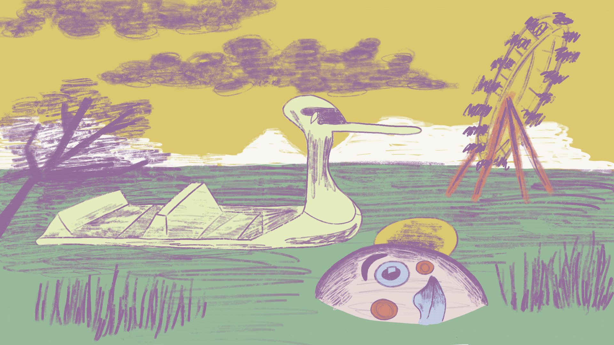
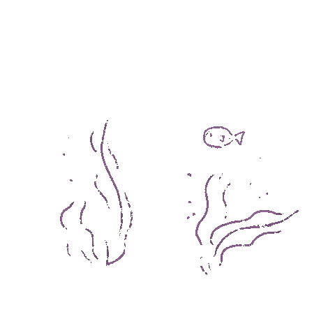
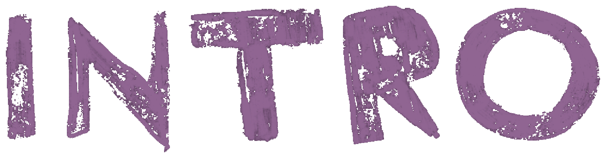

O objetivo proposto pelo Projeto: Interactive Storytelling de Web Design I (2023) foi o desenvolvimento de um website que ofereça uma experiência de leitura envolvente e interativa do álbum ilustrado “Ciclone- Diário de Uma Montanha-Russa”.
Este projeto teve como intuito explorar diversas estratégias de adaptação e transformação de um formato editorial para um formato interativo, abordando várias estruturas e hierarquias, utilizando html, css e javascript.